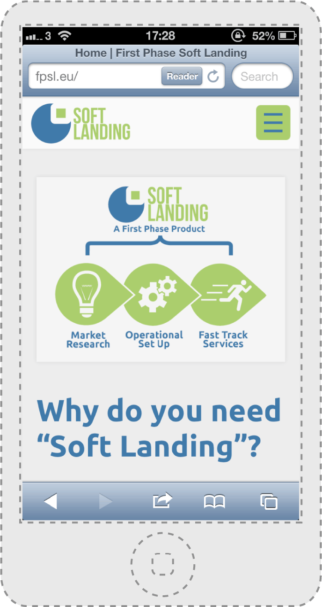

Soft Landing, a product by the company First Phase, exists to help companies from the EU and beyond start up their businesses in the UK.
Steve and Jeff, Soft Landing's representatives, requested a clean and minimal site, corporate but modern and friendly, utilising blues and greens which they had previously found to be well-received in user testing as both professional and approachable. They also provided me with a previously-designed logo.
I delivered a fully-customised site with a Wordpress back-end, based on the blank canvas HTML5 Underscores theme. I originally experimented with a Bootstrap-based HTML framework but found it frustratingly inflexible for customising responsive views, so elected to handcode the tablet and mobile versions of the site. However, I did borrow the default Bootstrap behaviour for navigation in small viewports, using a jQuery dropdown menu activated by a button.
The site has been built to be future-proof, and although it currently serves largely as a brochure for the product based around the Wordpress 'page' functionality, it can be expanded to include testimonials and a full blog including categorised posts and a comment area.